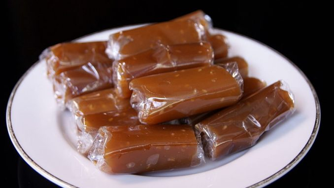

Bika Ambon

Bika Ambon adalah kue tradisional khas Medan yang terkenal dengan tekstur bersarang, aroma harum, dan rasa manis legit. Terbuat dari campuran telur, gula, santan, dan fermentasi air nira.
Nastar

Nastar adalah kue kering tradisional Indonesia berbentuk bulat kecil, diisi selai nanas. Kue ini biasanya disajikan saat Hari Raya dan acara spesial.
Jenang
Jenang adalah makanan tradisional Indonesia yang terbuat dari beras ketan, gula merah, dan santan. Teksturnya lembut dan rasanya manis, sering disajikan dalam upacara adat dan acara perayaan.